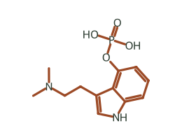

Medicinas psicodélicas
Qué son, cómo actúan, qué dice la investigación y cómo reducir riesgos. En español, sin alarmismo y sin idealizarlas.

La palabra «psicodélico» la propuso el psiquiatra Humphry Osmond en 1957 y viene del griego: algo así como «que hace visible la mente». Con ella nos referimos a sustancias que, durante unas horas, transforman la percepción, el estado de ánimo, el pensamiento y la vivencia del propio yo.
En estas guías tratamos tanto los psicodélicos clásicos (psilocibina, LSD, DMT y mescalina, todos con acción principal en el receptor de serotonina 5-HT2A) como otras sustancias que hoy se investigan en salud mental por caminos distintos: la MDMA, la ketamina o la ibogaína. Nuestro enfoque es el de APDER: divulgación rigurosa, uso terapéutico y reducción de riesgos.
Todas las guías
Una guía o una ficha por cada medicina: cómo actúa, efectos, dosis, investigación, riesgos e historia.
 Setas de psilocibina
Setas de psilocibina
 MDMA
MDMA
 LSD
LSD
 Ketamina
Ketamina
 Ayahuasca
Ayahuasca
 DMT
DMT
 5-MeO-DMT
5-MeO-DMT
 Mescalina
Peyote y San Pedro
Mescalina
Peyote y San Pedro
 Ibogaína
Ibogaína
 2C-B
2C-B
 4-AcO-DMT
4-AcO-DMT
 Amanita muscaria
Amanita muscaria
 Salvia divinorum
Salvia divinorum
 Cannabis
Cannabis
 Kanna
Kanna
 Kratom
Kratom
 Datura
Datura
 Cacao
Cacao
 Tabaco
Tabaco
 Microdosis
Microdosis
¿Qué son los psicodélicos?
Psicodélicos de origen natural
Muchas de estas sustancias existen en la naturaleza y algunas culturas llevan siglos usándolas:
- Las setas de psilocibina crecen en casi todo el mundo, también en prados y bosques de la península ibérica.
- La ayahuasca es una bebida de la Amazonía. Se prepara con la liana Banisteriopsis caapi, que contiene inhibidores de la MAO, y con hojas de Psychotria viridis, que aportan DMT. Gracias a la liana, la DMT se puede tomar por vía oral.
- La mescalina se encuentra en varios cactus americanos, como el peyote y el San Pedro (huachuma).
- La ibogaína se extrae de la raíz de un arbusto africano, la iboga, usada en ritos de iniciación del culto bwiti en Gabón.
- La Salvia divinorum es una planta de la sierra mazateca de Oaxaca (México). Su principio activo, la salvinorina A, actúa sobre receptores opioides kappa y no sobre la serotonina.
Otras sustancias naturales con efectos psicoactivos son el cannabis, la 5-MeO-DMT (presente en plantas y en la secreción del sapo Incilius alvarius) y la Amanita muscaria.
Psicodélicos creados en laboratorio
- El LSD lo sintetizó en 1938 el químico suizo Albert Hofmann, en los laboratorios Sandoz, mientras buscaba un estimulante circulatorio. En 1943 descubrió por accidente sus efectos.
- La ketamina se creó en 1962 como anestésico. Hoy se usa también para la depresión resistente, siempre bajo control médico.
- La MDMA la patentó la farmacéutica Merck en 1912 como sustancia intermedia. En los años setenta y ochenta algunos psicoterapeutas la usaron en consulta.
- El 2C-B lo sintetizó el químico Alexander Shulgin en 1974. Combina rasgos de los psicodélicos y de los empatógenos.
¿Cómo se usan los psicodélicos?
Las personas usan psicodélicos desde hace miles de años. Hoy se emplean en contextos muy distintos: ceremonias religiosas, consultas de investigación clínica, búsqueda personal, fiestas o en casa.
Uso tradicional y ceremonial
Las setas en Mesoamérica, el peyote en Norteamérica, la ayahuasca en la Amazonía o la iboga en África central forman parte de tradiciones religiosas con siglos de historia. En ellas, una figura con experiencia (un curandero, un chamán o un guía) dirige la ceremonia, y el uso está rodeado de normas, cantos y cuidados. Muchas de estas tradiciones sobrevivieron a siglos de persecución y siguen vivas.
Uso terapéutico
Entre los años cincuenta y setenta se publicaron cientos de estudios con psicodélicos en psiquiatría. Después, la investigación casi desapareció durante décadas, pero desde los años 2000 ha vuelto con fuerza. Hoy se estudian para la depresión, el trastorno de estrés postraumático, las adicciones (alcohol, tabaco, opioides), el trastorno obsesivo-compulsivo, la anorexia y la angustia ante enfermedades graves.
Centros como la Universidad Johns Hopkins, el Imperial College de Londres, la Universidad de Nueva York o el Hospital Universitario de Zúrich lideran esta investigación. En España también se han hecho estudios, sobre todo con ayahuasca.
Uso recreativo
También hay un consumo lúdico, sin finalidad terapéutica ni religiosa. Es el contexto con más incidencias registradas en los servicios de urgencias, sobre todo por mezclas con alcohol y otras drogas, por sustancias adulteradas y por falta de acompañamiento. Por eso en APDER insistimos en la reducción de riesgos (ver más abajo) y en el análisis de sustancias.
Microdosis
Microdosificar es tomar de forma repetida una fracción muy pequeña de una dosis normal, sin efectos perceptibles. Se ha hecho muy popular para mejorar el ánimo o la concentración, sobre todo con setas de psilocibina y LSD. Los estudios controlados con placebo, de momento, encuentran efectos pequeños y muy influidos por las expectativas. Lo explicamos en la guía de microdosis.
Tipos de psicodélicos
Una forma útil de ordenarlos es por su familia química y por cómo actúan.
Triptaminas
Comparten estructura con la serotonina. Son psilocibina (setas), 4-AcO-DMT (un análogo sintético que el cuerpo convierte en psilocina), DMT, 5-MeO-DMT y la combinación de DMT e inhibidores de la MAO que es la ayahuasca. El LSD es una ergolina, pero también contiene en su estructura un núcleo de triptamina.
Fenetilaminas
Comparten estructura con la dopamina y la noradrenalina. Aquí están la mescalina (peyote y San Pedro), el 2C-B y la MDMA. La MDMA se suele clasificar aparte, como empatógeno, porque su efecto principal es emocional más que perceptivo.
Disociativos
Bloquean el receptor NMDA del glutamato y producen una sensación de separación del cuerpo y del entorno. El más conocido es la ketamina. La ibogaína tiene también efecto sobre este receptor, además de sobre los sistemas opioide y serotoninérgico.
Otros
La salvinorina A de la Salvia divinorum actúa sobre receptores opioides kappa. El muscimol de la Amanita muscaria actúa sobre el sistema GABA y la seta puede ser tóxica. El THC del cannabis actúa sobre el sistema endocannabinoide. Ninguno de ellos es un psicodélico clásico, aunque a veces se agrupen con ellos.
Riesgos y reducción de daños
Los psicodélicos clásicos tienen poca toxicidad física, pero no están libres de riesgos. Los peligros principales son psicológicos y dependen mucho de la persona y del contexto.
No se recomiendan si tú o un familiar directo habéis tenido esquizofrenia, otro trastorno psicótico o trastorno bipolar. Tampoco si tienes problemas cardíacos o tomas litio, tramadol o ciertos antidepresivos sin consultarlo antes con un médico.
- Mentalidad y entorno («set and setting»): tu estado emocional y el lugar donde estás influyen muchísimo en la experiencia.
- Compañía: conviene contar con una persona de confianza que no haya consumido.
- Dosis: la potencia varía mucho, sobre todo en productos naturales. Empezar con poco reduce el riesgo.
- Análisis: en España hay servicios que analizan sustancias, como Energy Control, para saber qué contienen realmente.
- No mezclar con alcohol, otras drogas ni medicamentos que no hayas consultado.
- Emergencias: ante cualquier problema serio, llama al 112.
Si algo va mal
Llama al 112 si la persona:
- no responde o ha perdido el conocimiento;
- tiene convulsiones;
- respira con dificultad o tiene dolor en el pecho;
- está muy caliente, con la piel seca o roja, o confundida;
- está tan agitada que puede hacerse daño o hacerlo a otras personas;
- habla de hacerse daño o de quitarse la vida.
El 112 es gratuito y atiende en toda la Unión Europea. Pedir ayuda a tiempo importa más que el miedo a las consecuencias.
Mientras llega la ayuda
- No dejes sola a la persona.
- Si está inconsciente y respira, ponla de lado, en posición lateral de seguridad.
- Busca un sitio tranquilo, fresco y con poca luz.
- No le des más sustancias ni otras para «contrarrestar» el efecto.
- Si está consciente, agua a sorbos; beber mucha agua de golpe también es peligroso.
Qué contar al personal sanitario
Qué ha tomado, cuánto, cuándo, si lo ha mezclado con algo y qué medicación toma de forma habitual. Si queda un resto o el envase, llévalo. Decir la verdad sirve para tratar bien a la persona. Para dudas sobre una intoxicación, el Servicio de Información Toxicológica atiende las 24 horas en el 91 562 04 20.
Si es una experiencia difícil, sin señales físicas de alarma
Acompaña con presencia y voz tranquila. Recuerda a la persona que lo que siente es el efecto de la sustancia y que pasará. Si no cede o aparece riesgo, pide ayuda. Si alguien tiene pensamientos de hacerse daño, la Línea 024 del Ministerio de Sanidad atiende gratis, las 24 horas y de forma confidencial.
Antes de tomar nada
Analizar una sustancia es la única forma de saber qué contiene. En España lo hace Energy Control, con sedes en Andalucía, Cataluña, Madrid y Mallorca y envío por correo desde otras comunidades. Revisa también el apartado de interacciones de cada guía.
Preguntas frecuentes
¿Los psicodélicos crean adicción?
Los psicodélicos clásicos tienen un potencial adictivo bajo: no suelen provocar consumo compulsivo y el cuerpo desarrolla tolerancia muy rápido, así que repetirlos seguido apenas tiene efecto. La ketamina y la MDMA sí pueden dar lugar a patrones de consumo problemáticos.
¿Puede uno morir por una sobredosis?
Con la psilocibina y el LSD la dosis letal es muy superior a la habitual, y las muertes por toxicidad directa son extremadamente raras. Los riesgos graves vienen sobre todo de accidentes, conductas peligrosas, mezclas con otras sustancias o problemas médicos previos. La ibogaína y la MDMA tienen más riesgos físicos.
¿Esta web vende o facilita sustancias?
No. Estas páginas son solo divulgativas.
Última revisión: noviembre de 2026.
Antes de seguir. Esta información es divulgativa. La preparamos con cuidado a partir de fuentes científicas y de reducción de riesgos, pero puede tener errores o quedarse antigua. No es consejo médico ni sustituye a un profesional sanitario, sobre todo si tomas medicación o tienes algún problema de salud. APDER no anima al consumo de ninguna sustancia y no se hace responsable del uso que se haga de esta información. Si ves un error, escríbenos a info@apder.org.
Dirección canónica: https://apder.org/sustancias/